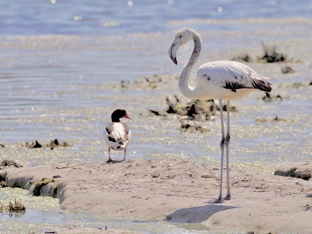
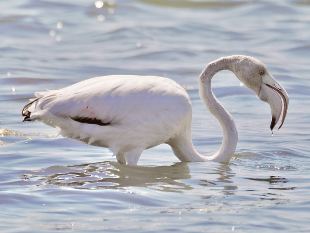

Greater Flamingo
Phoenicopterus roseus
Order: Phoenicopteriformes
Family: Phoenicopteridae

A large pale-pinkish bird with long legs and neck. Found in large flocks in lakes. Flamingos' pink colour comes from the carotenoids in their diet. Pink colour is more obvious during breeding season, and fades over time.

Many cartoons depict flamingo beaks wrongly. The beak has a thicker lower mandible and a thinner upper mandible, and contain lamellae to help filter-feeding.